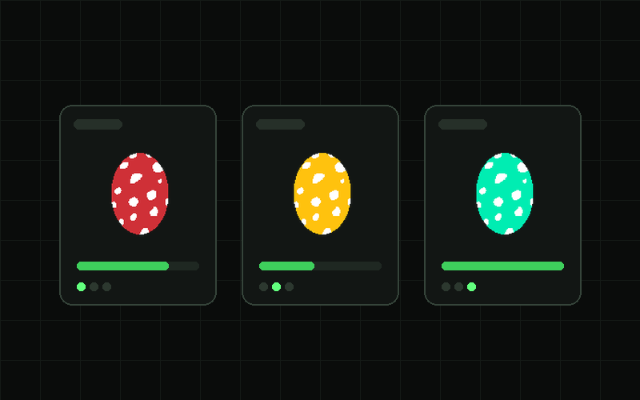
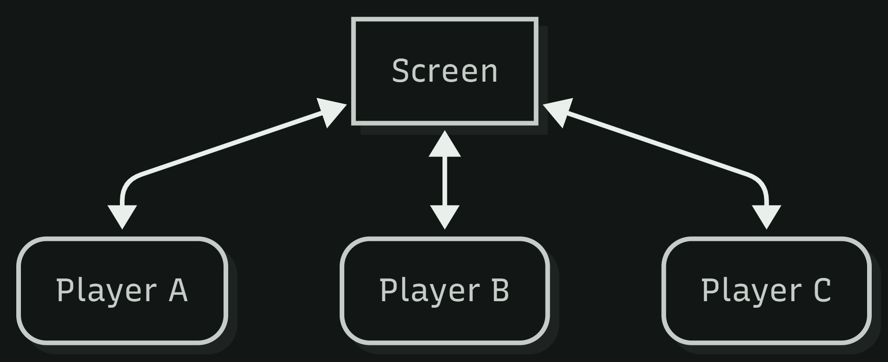

Unity · Team of four
Warehouse Panic
Three players, one big screen, and three phones used as controllers.

Overview
A multidisciplinary studio project with two game developers and two web developers. The game runs on a large screen in the school atrium, and each player joins with their own phone instead of a controller. Three players work together in an Easter warehouse, picking the right eggs and delivering orders before time runs out.
Because everyone shares one screen but holds their own controller, the interesting part is not the graphics. It is keeping three separate phones, one game and one order list agreeing with each other while people are hurrying.
What I built
- Order system —
OrderManagerandOrdergenerate orders and check whether what a player delivers is actually what was asked for. - Egg spawning —
EggSpawnerkeeps the warehouse stocked so there is always something to pick up. - Delivery points —
DeliveryPointhandles what happens when a player drops an item at the counter. - Movement and pickup for all three players — a grid movement and item interaction script per player, so each phone drives its own character.
- Menu flow —
MenuManagerfor getting from the start screen into a round. - A backend tester —
BackendTester, so the game logic could be tried without needing three phones connected.
How the setup works
The screen shows the warehouse. Each player opens a web page on their phone, which becomes their controller and sends their input to the game.

What I learned
- Splitting a game into parts so three people can act at the same time without stepping on each other
- Working in a team with web developers, where my game had to fit their controller and theirs had to fit my game
- Writing a tester for my own systems instead of needing the whole setup to try one thing
- Keeping scripts per player readable instead of one script full of exceptions